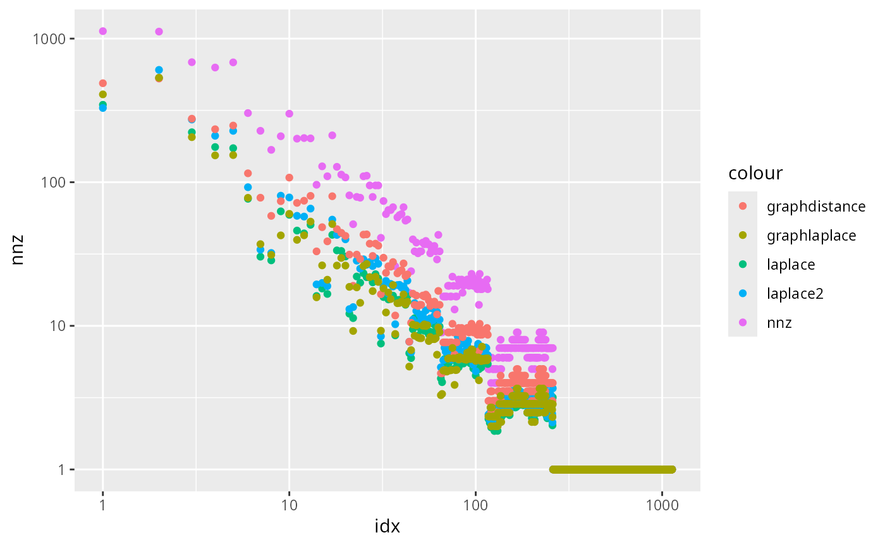
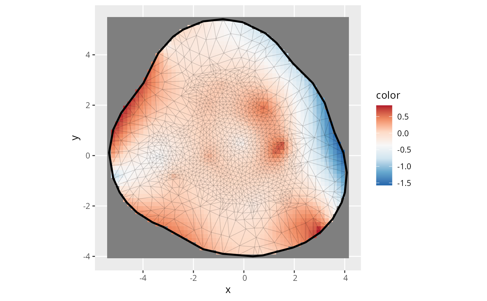
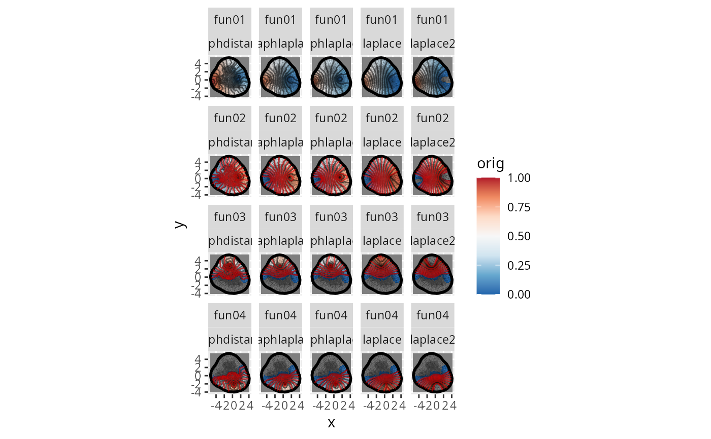

![[Experimental]](figures/lifecycle-experimental.svg) Construct hierarchical
basis functions. This is highly experimental and may change or be removed
in future versions.
Construct hierarchical
basis functions. This is highly experimental and may change or be removed
in future versions.
Usage
make_hierarchical_mesh_basis(mesh, forward = TRUE, method = NULL, alpha = 1)
inla.spde2.pcmatern_B(mesh, ..., B)Arguments
- mesh
A
fmesherobject.- forward
logical; if
TRUE(default), the basis functions are constructed in forward order; otherwise in reverse order.- method
Character; one of
"laplace"(default),"graphdistance"or"graphlaplace". The method used to construct the basis functions. See Details.- alpha
Numeric; only used if
method = "laplace". The approximate Laplacian power used to construct the basis functions. Default is(1 + fm_manifold_dim(mesh)) / 2, which gives an approximately linear function along the shortest path. Must be in the range[1, 2]. See Details.
Details
The hierarchical basis functions are constructed by iteratively adding basis functions centered at the point furthest away from the previously added basis functions. The radius of each basis function is equal to the distance to the previously added basis functions at the time of addition. Three methods are available to construct the basis functions:
laplaceThe basis functions are constructed using a combination of two operators, the Laplacian and the squared Laplacian (the biharmonic operator). This approximates the Laplacian raised to the power
alpha. The default value foralphagives an approximately linear function along the shortest path.one based on the standard FEM stiffness matrix, and one based on the graph Laplacian. Thealphaparameter controls the weight between the two operators, withalpha = 1using only the Laplacian andalpha = 2using only the squared Laplacian.graphdistanceThe basis functions are constructed using a simple neighbour distance-based approach, where the basis function value decreases by equal amounts for each traversed edge.
graphlaplaceThe basis functions are constructed using the graph Laplacian only.
Examples
m <- fmesher::fmexample$mesh
B <- make_hierarchical_mesh_basis(m, method = "laplace2", alpha = 1.5)
# \donttest{
m <- fmesher::fm_subdivide(fmesher::fmexample$mesh, 1)
B <- list()
for (methodB in c(
"laplace", "laplace2",
"graphdistance",
"graphlaplace", "graphlaplace2"
)) {
B[[methodB]] <- make_hierarchical_mesh_basis(
m,
method = methodB, alpha = 1.5
)
}
if (require("ggplot2") && require("patchwork")) {
print(
ggplot(
data =
data.frame(
idx = seq_len(ncol(B$laplace)),
nnz = as.vector(Matrix::colSums(0 != B$laplace)),
laplace = as.vector(Matrix::colSums(B$laplace)),
laplace2 = as.vector(Matrix::colSums(B$laplace2)),
distance = as.vector(Matrix::colSums(B$graphdistance)),
graph = as.vector(Matrix::colSums(B$graphlaplace)),
graph2 = as.vector(Matrix::colSums(B$graphlaplace2))
)
) +
geom_point(aes(x = idx, y = nnz, color = "nnz")) +
geom_point(aes(x = idx, y = laplace, color = "laplace")) +
geom_point(aes(x = idx, y = laplace2, color = "laplace2")) +
geom_point(aes(x = idx, y = distance, color = "graphdistance")) +
geom_point(aes(x = idx, y = graph, color = "graphlaplace")) +
scale_y_log10() +
scale_x_log10()
)
idx <- seq_len(fmesher::fm_dof(m))
idx <- seq_len(10)
method0 <- "laplace"
theta <- qr.solve(B[[method0]][, idx, drop = FALSE], m$loc[, 1])
print(
ggplot() +
gg(m,
col = B[[method0]][, idx, drop = FALSE] %*% theta - m$loc[, 1],
nx = 60, ny = 60
) +
fmesher::geom_fm(
data = m,
color = ggplot2::alpha("black", 0.1),
alpha = 0
) +
scale_fill_distiller(palette = "RdBu")
)
ev <- fmesher::fm_evaluator(m, dims = c(60, 60))
df <- NULL
for (method in c(
"laplace", "laplace2",
"graphdistance",
"graphlaplace", "graphlaplace2"
)) {
fun_cumulative <- 1e-16
for (k in 1:28) {
fun_orig <- as.vector(B[[method]][, k, drop = FALSE])
fun_cumulative <- fun_cumulative + fun_orig
fun_norm <- fun_orig / fun_cumulative
df <- rbind(
df,
data.frame(
x = ev$lattice$loc[, 1],
y = ev$lattice$loc[, 2],
orig = as.vector(fmesher::fm_evaluate(ev, fun_orig)),
norm = as.vector(fmesher::fm_evaluate(ev, fun_norm)),
index = k,
fun = paste0(
"fun",
formatC(k, width = 2, format = "d", flag = "0")
),
method = method
)
)
}
}
df$norm[df$fun == "fun01"] <- NA
df$orig[df$orig == 0] <- NA
df$norm[df$norm == 0] <- NA
print(
ggplot(data = df[df$index <= 4, ]) +
geom_tile(aes(x, y, fill = orig),
na.rm = TRUE
) +
fmesher::geom_fm(
data = m,
color = ggplot2::alpha("black", 0.1),
alpha = 0
) +
geom_contour(aes(x, y, z = orig),
breaks = seq_len(29 - 15) / (30 - 15), #* 2-0.5,
na.rm = TRUE, col = "black", alpha = 0.5
) +
geom_contour(aes(x, y, z = norm),
breaks = seq_len(29 - 15) / (30 - 15), #* 2-0.5,
na.rm = TRUE, col = "red", alpha = 0.5
) +
scale_fill_distiller(palette = "RdBu", limits = c(0, 1)) + #* 2-0.5) +
facet_wrap(vars(fun, method))
)
}



# }